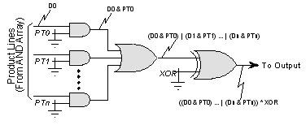

The FUSE primitive model has any number of inputs but only a single output which is determined according to the fuse expression assigned to the models EXPR property. The format of fuse expressions are described in full at the start of this chapter.
For example, the following diagram shows part of the output (post AND matrix) stage of a typical PLD. Each product line from the AND matrix can be separately enabled/disabled (via the PTn fuses). Enabled product term lines are then ORed together and the result inverted if the XOR fuse is programmed. The diagram illustrates how the fuse expression is built up for the overall function. This expression could then be assigned to the EXPR property of a FUSE input with the correct number of input pins. Note the polarity of the fuse numbers in the expression - the ones and zeros in the fuse file (which replace the fuse numbers) correspond directly with the Boolean logic required by the inputs, so the fuse numbers used are not inverted.

| Pin | Type | Pin Set | Description |
D# |
Input |
#1 |
Data Inputs |
Q |
Output |
- |
Selected inputs |
| Property | Type | Meaning | Default | Notes |
FILE |
JEDEC File |
Name of JEDEC file. | See Note |
[1] |
EXPR |
Fuse Expr. |
Fuse expression for the output | See Note |
[2] |
1. The FILE property specifies the path and filename of the JEDEC file to be used for fuse values. There is no default for this property - it must be specified. If your fuse expression doesn't contain any fuse numbers, you can avoid the need to specify a file by assigning a value of [NULL].
2. The fuse expression must be specified - there is no default.
See Also: